NF-041 · Account ManagementShow-Stop
PIN recovery sends no verification email
- Steps
- Start PIN recovery for a protected profile.
- Expected
- A verification email arrives.
- Actual
- Nothing is ever sent. The flow dead-ends and blocks release.
QA Case Study · Web & Mobile
301 documented test cases, twelve testing disciplines, 54 defects traced one-to-one into Jira, and a release decision set by criteria that were written before a single result came in.
Independent, unofficial QA training & portfolio project. Not affiliated with, endorsed by or sponsored by the service under test or its owner; the service is Netflix, and Netflix and related marks belong to Netflix, Inc. Evidence is reduced or blurred, and Security-category defects are fully redacted.
The decision
Go / No-Go criteria were fixed before analyzing results, so the verdict follows the data rather than the other way round.
Primary blocker: profile PIN recovery that never sends its verification email. The areas with the most bugs were not the areas carrying the most release risk. That gap is the real finding.
The numbers
187 passed, 54 failed, 4 blocked and 56 skipped. Every failure became exactly one traceable defect. Click any chart to enlarge.
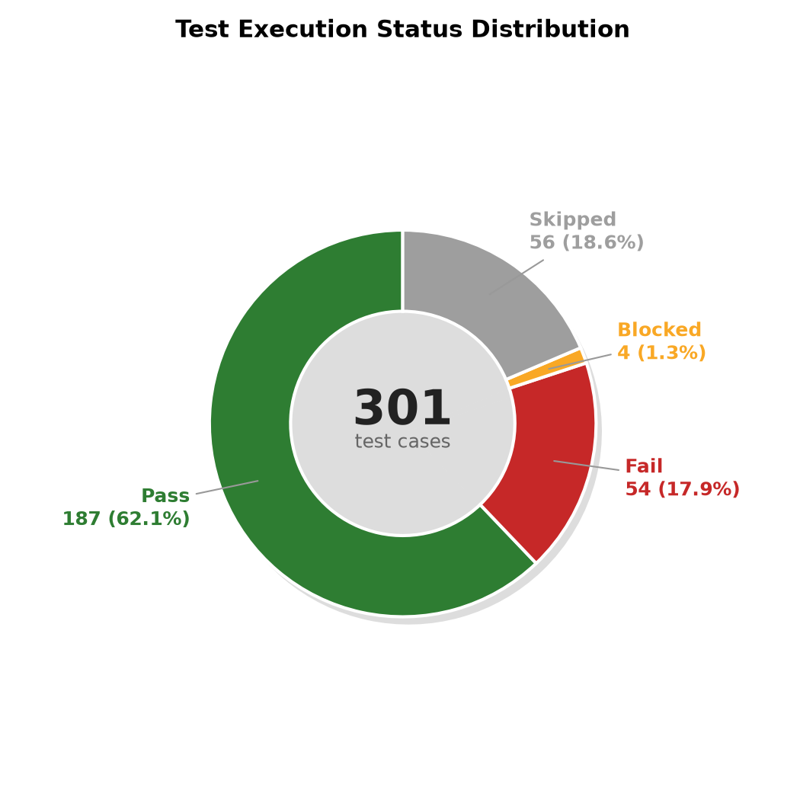
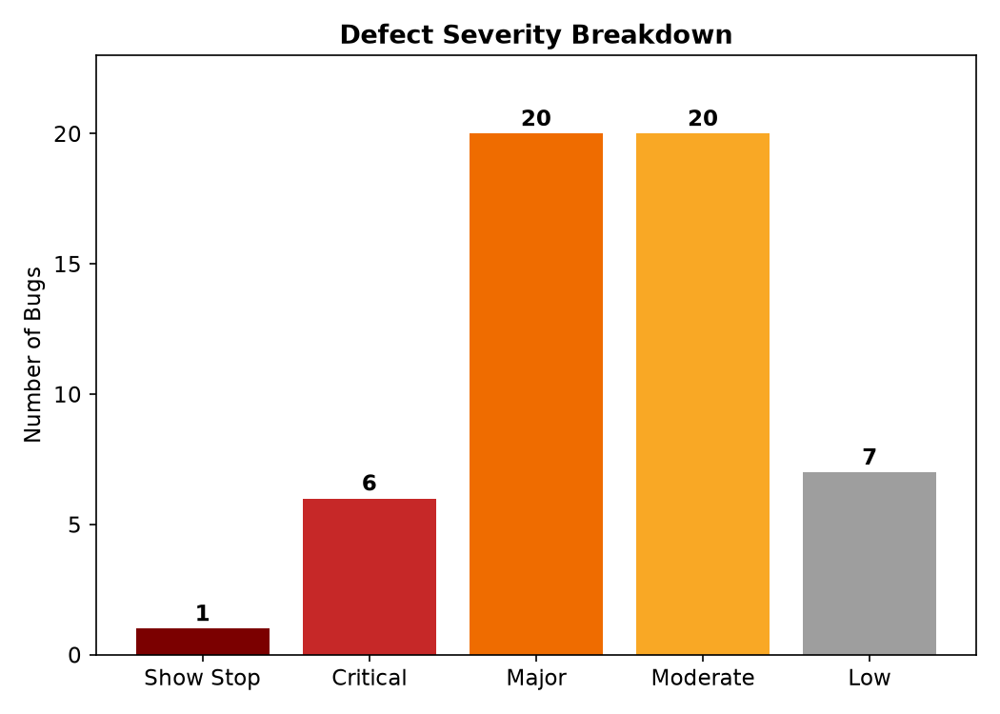
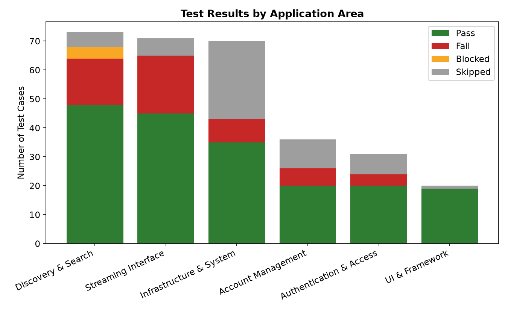
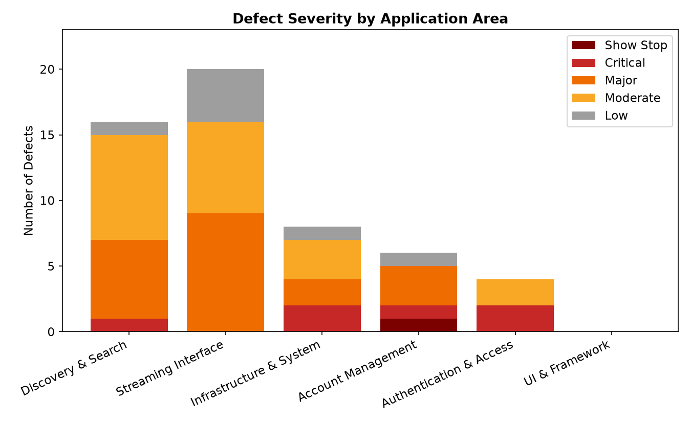
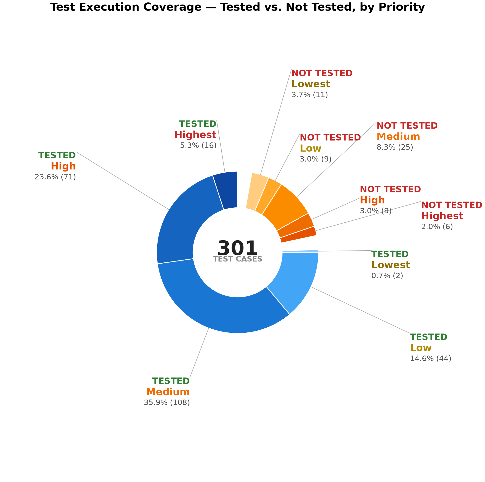
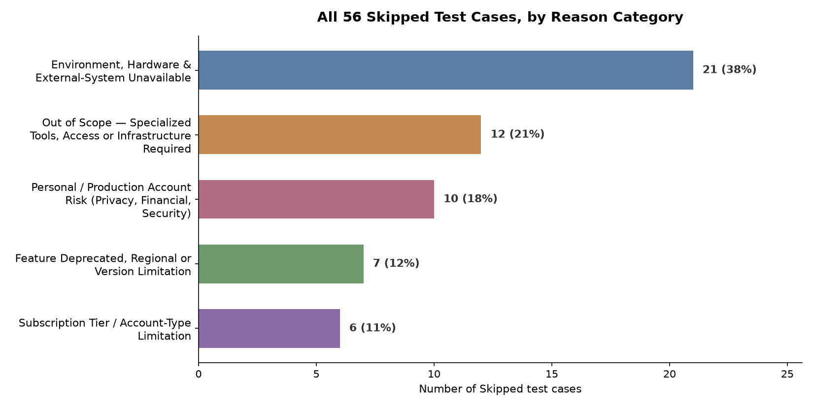
How it was done
Manual, hands-on testing on desktop Chrome and a real Android device, with confirmatory passes on Firefox and Brave.
Test cases written per feature area and prioritized, all kept in one master Excel workbook (the STD).
259 cases on Windows + Chrome, 29 on a Samsung Galaxy A56, the rest across other environments.
Each failure logged as one Jira defect with severity, steps, expected vs actual and evidence.
Results judged against the Go / No-Go criteria set in advance, then summarized in a formal report.
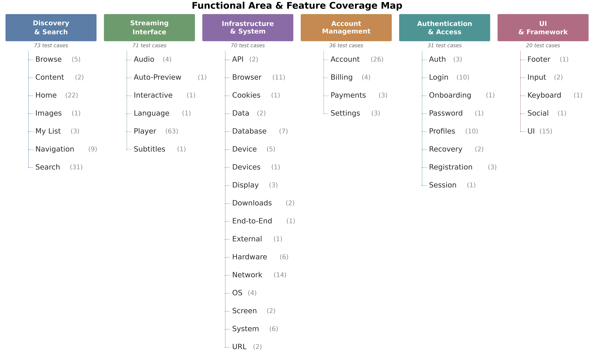
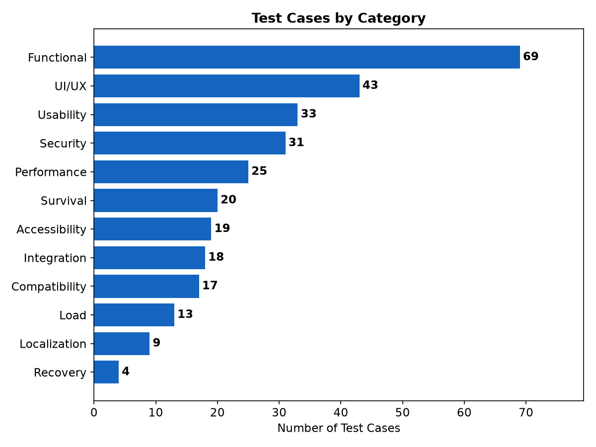
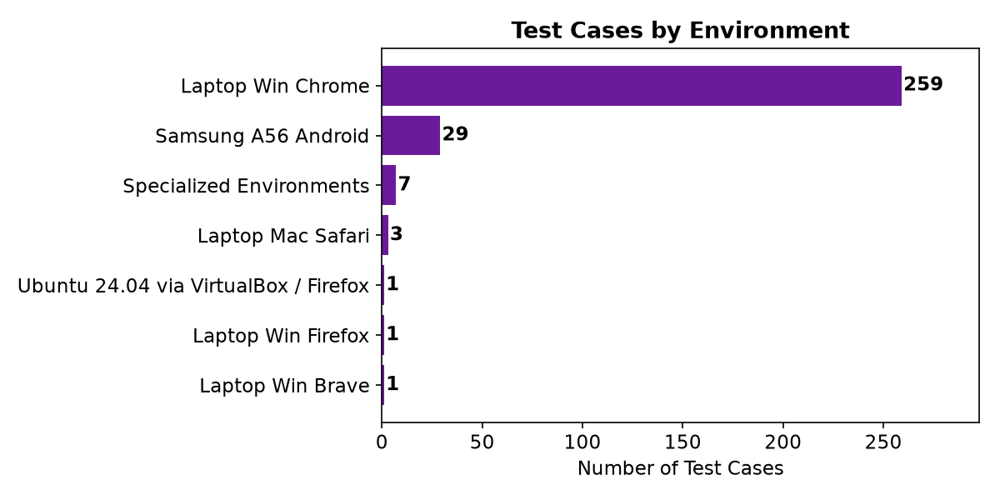
Findings
A selection from the 54 logged defects. Security-category defects are intentionally left out of this public page.
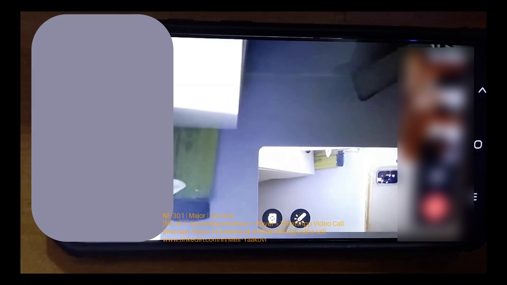
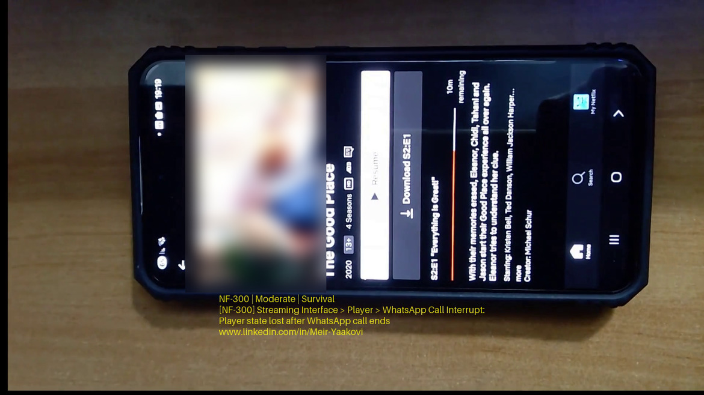
Behind the scenes
Doing this by hand means hours of duplicated data entry. So the whole cycle runs from a single Excel workbook, kept in sync with Jira and TestRail by small tools I built for the job.
Syncs the workbook with Jira and TestRail in both directions, uploads evidence, and resumes after network loss.
Stamps every screenshot and recording with bug ID, severity and category, colour-coded by severity.
Builds the full Software Test Report, with charts, tables and per-defect pages, straight from the workbook.
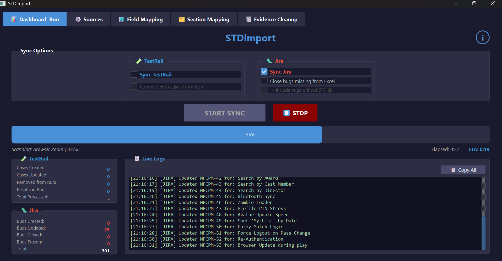
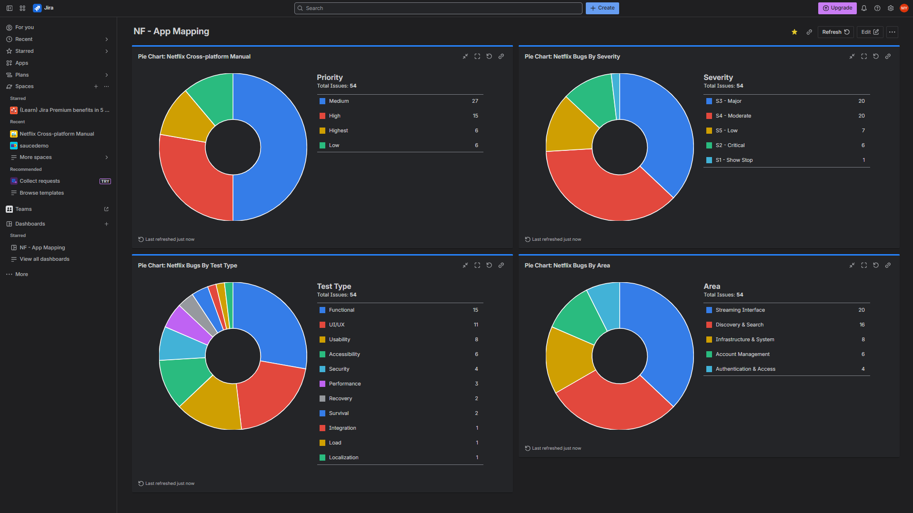
Estimated effect: a full sync takes about 20 minutes with the tools, versus an estimated 11+ hours by hand (an estimate, not a measurement). More about these tools on my project portfolio →
The deliverable
Shared on LinkedIn
I turn the most interesting findings into short posts. Here are some of them.
Fifty wrong attempts in a minute and the system never flinched. Bugs don't always look like a broken button. Sometimes a bug looks like silence.
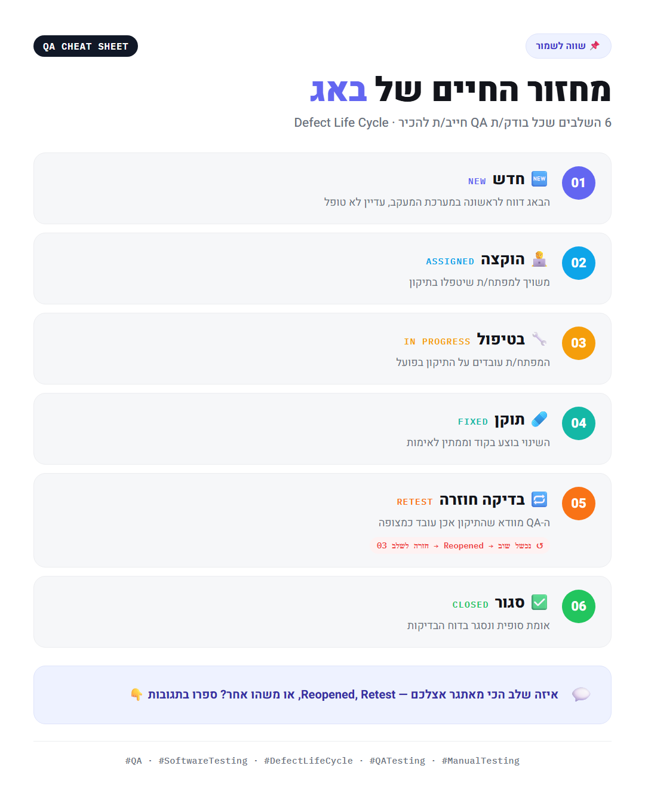
New, assigned, in progress, fixed, retest, closed. A bug you didn't document carefully comes back in the next release.
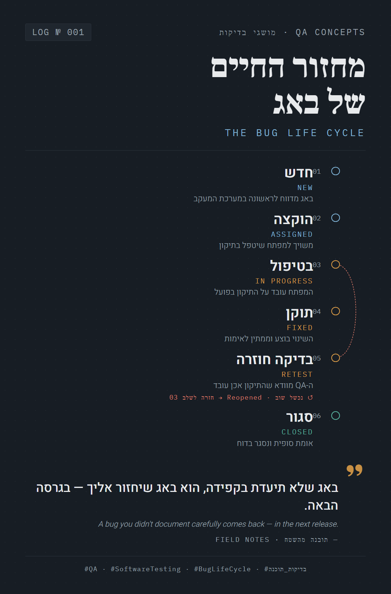
The same idea as a one-screen reference: where a defect lives, and where it can bounce back.
About the author
QA engineer who likes finding the quiet bugs, the ones that hide behind a working screen, and building small tools so the paperwork never gets in the way of the testing. This case study is my own independent project, from test design to final report.